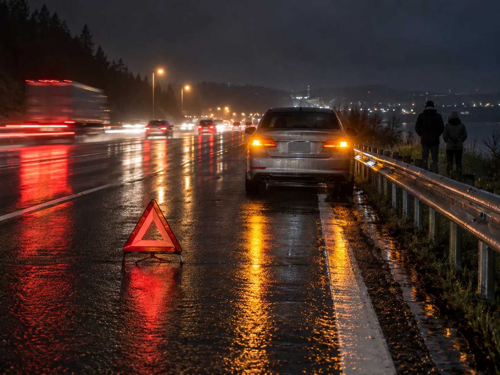
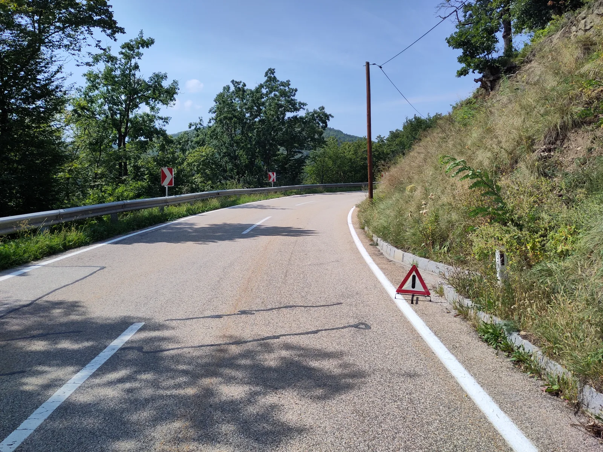
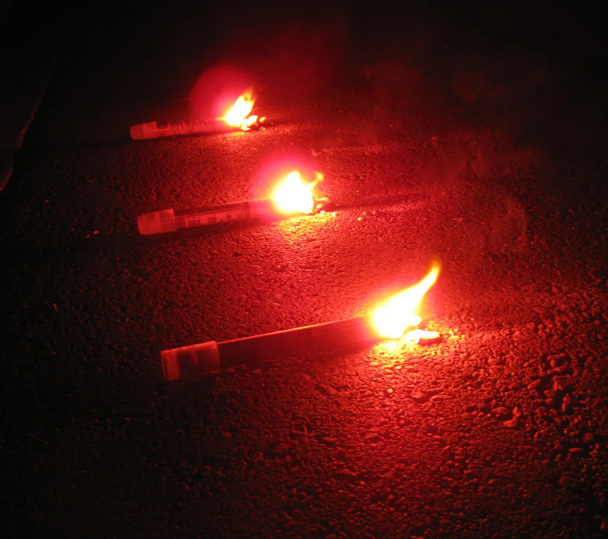
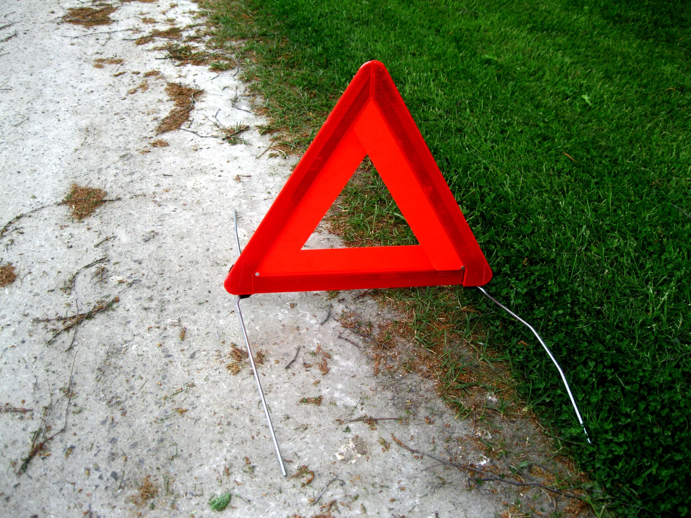

▲ 고장자동차의 표지는 후방에서 접근하는 차량 운전자가 확인할 수 있는 위치에 설치해야 한다 ⓒ CarPrism (AI 생성 이미지)
고속도로 주행 중 갑자기 이상 신호가 오고, 결국 차를 갓길에 세웠다. 비상등을 켜긴 했는데, 트렁크에 삼각대가 있었는지조차 가물가물하다. "몇 분이면 견인차 올 텐데 괜찮겠지" 싶지만, 바로 이 몇 분 사이에 후방에서 달려오는 차량과의 2차 사고가 벌어진다.
안전삼각대와 불꽃신호기(섬광신호기) 비치는 선택이 아니라 도로교통법이 정한 의무다. 그런데 정작 "몇 미터 뒤에 세워야 하는지", "삼각대만 있으면 되는지" 등 세부 규정은 운전자 대부분이 정확히 알지 못한다. 심지어 이 규정 자체도 최근 몇 년 사이 크게 바뀌었다.
1. 법이 정한 의무 — 삼각대와 불꽃신호기, 무엇을 갖춰야 하나
도로교통법 제67조는 고속도로등을 운행하는 자동차 운전자에게 고장자동차 표지를 '항상 비치'하도록 규정하고 있다. 단순히 사고가 났을 때만 필요한 게 아니라, 애초에 차량에 없으면 그 자체로 법 위반이라는 뜻이다.
| 구분 | 내용 |
|---|---|
| 비치 대상 | 고속도로·자동차전용도로를 운행하는 모든 자동차 |
| 표지 종류 ① | 안전삼각대 — 자동차 및 자동차부품의 성능과 기준에 관한 규칙에 따른 규격품 |
| 표지 종류 ②(야간 추가) | 사방 500m 지점에서 식별 가능한 적색 섬광신호·전기제등 또는 불꽃신호 |
| 설치 위치 | 해당 자동차의 후방에서 접근하는 차량 운전자가 확인할 수 있는 위치 |
| 정차 위치 | 가능한 한 도로 우측 가장자리에 정지 |
📍 낮에는 삼각대만? 밤에는 다르다
낮 시간대에는 안전삼각대만으로 요건을 충족할 수 있지만, 밤에는 삼각대에 더해 섬광신호·전기제등·불꽃신호 중 하나를 추가로 설치해야 한다. 즉 야간 고속도로 주행이 잦다면 삼각대 하나만 트렁크에 넣어두는 것으로는 부족하고, 불꽃신호기 등 야간용 신호 장비를 별도로 갖춰야 규정을 충족한다.
도로교통법 시행규칙 제40조 원문은 국가법령정보센터에서 직접 확인할 수 있다. 도로교통법 시행규칙 바로가기
2. 갖추지 않으면 어떻게 되나 — 과태료와 2차 사고 책임
고장자동차 표지를 비치하지 않거나, 고장 시 설치하지 않으면 과태료 처분 대상이 된다. 도로교통법 제67조제2항 위반에 대한 과태료는 차종별로 정해져 있다.
| 차종 | 과태료 |
|---|---|
| 승용자동차등 | 2만 원 |
| 승합자동차등 | 2만 원 |
| 이륜자동차등 | 1만 원 |
📍 과태료보다 무서운 건 '책임 소재'
과태료 자체는 1~2만 원 수준으로 크지 않다. 그러나 표지를 설치하지 않은 상태에서 후속 차량과 2차 사고가 발생하면 이야기가 달라진다. 고장 차량 운전자가 법이 정한 안전 조치를 취하지 않았다는 점이 과실 비율 산정에 불리하게 작용할 수 있고, 인명 피해가 발생하면 형사 책임 문제로 이어질 수도 있다.

▲ 안전삼각대는 후방에서 오는 차량 운전자가 미리 확인할 수 있는 위치에 세워야 한다 ⓒ Wikimedia Commons
3. "100m 뒤에 세워라"는 옛말 — 달라진 설치 거리 기준
한동안 운전 면허 시험이나 교본에는 "주간에는 100m, 야간에는 200m 뒤에 삼각대를 설치하라"는 기준이 등장했다. 문제는 이 거리가 현실적으로 지키기 어렵다는 점이었다.
✅ 거리 기준이 바뀐 이유 — 설문에 드러난 현실
· 안전삼각대를 실제로 소지한 운전자는 55%에 그침
· 미소지 이유 46% — "100m(야간 200m) 뒤에 걸어가서 설치하기가 현실적으로 어렵다"
· 34% — "설치 규정을 지키는 행위 자체가 위험하다"(도로 위를 걸어야 하므로)
· 18% — "사고 직후라 경황이 없다"
즉 거리 기준을 지키려다 오히려 운전자가 도로 위에서 2차 사고를 당할 위험이 더 크다는 지적이 이어졌다. 이에 따라 정부는 안전삼각대 설치 거리 기준을 완화해, 구체적인 미터 수 대신 "후방에서 접근하는 자동차 운전자가 확인할 수 있는 위치"라는 포괄적 기준으로 바꿨다. 도로가 직선인지 곡선인지, 시야 확보가 얼마나 되는지에 따라 운전자가 상황에 맞게 판단해 설치하면 되는 방식이다.
| 구분 | 기준 |
|---|---|
| 과거 기준 | 주간 약 100m, 야간 약 200m 후방에 설치 |
| 현행 기준 | 일률적인 거리 대신 "후방 접근 차량 운전자가 확인 가능한 위치"에 설치 |
📍 그래도 '가까이'는 금물
거리 기준이 완화됐다고 해서 차량 바로 뒤에 붙여 세워도 된다는 뜻은 아니다. 곡선 구간, 오르막 정점 직후처럼 시야 확보가 어려운 지점에서는 더 멀리, 직선 구간처럼 시야가 트인 곳에서는 상대적으로 가까이 두더라도 후속 차량이 반응할 시간을 벌어줄 수 있는 위치를 스스로 판단해야 한다. 무엇보다 표지를 설치하러 가는 행위 자체가 가장 위험한 순간이라는 점을 감안해, 교통량이 많은 고속도로에서는 무리하게 걸어가지 않는 것이 우선이다.
4. 삼각대 vs 불꽃신호기, 뭐가 다른가 — 사용법과 화재 위험
둘 다 '고장자동차 표지'로 인정되지만 역할이 다르다. 안전삼각대는 반사판으로 빛을 반사해 알리는 수동적 표지이고, 불꽃신호기(섬광신호기)는 스스로 발광·발화하는 능동적 신호다.
| 구분 | 안전삼각대 | 불꽃신호기(섬광신호기) |
|---|---|---|
| 작동 방식 | 반사판이 헤드라이트 빛을 반사 | 자체 연소·발광으로 스스로 빛을 냄 |
| 법적 위치 | 기본 표지(항상 비치 의무) | 야간 추가 표지(밤에는 병행 설치) |
| 주요 위험 | 비교적 안전, 설치 시 도보 이동 위험 | 고온 화재 위험 — 연소 잔여물이 액체 상태로 떨어짐 |
| 취급·소지 | 제한 없음 | 2017년 3월 개정 이후 판매·소지·사용에 경찰 허가 불필요 |

▲ 불꽃신호기는 스스로 발화해 원거리에서도 눈에 띄지만, 그만큼 화재 위험도 함께 따라온다 ⓒ Wikimedia Commons
⚠️ 불꽃신호기 사용 시 반드시 지켜야 할 것
· 뚜껑을 벗기고 성냥처럼 끝부분을 마찰시켜 점화한다
· 손에 들 때는 수직이 아니라 45도 각도로 기울여, 점화면이 지면을 향하게 한다 — 영화처럼 수직으로 들면 뜨거운 잔여물이 손이나 옷으로 떨어질 수 있다
· 바람을 등진 상태에서 사용하고, 마른 풀·기름·인화물질 근처에서는 사용하지 않는다
· 다 쓴 신호기는 완전히 꺼졌는지 확인한 뒤 처리한다
5. 숫자로 보는 2차 사고 — 왜 이 몇 초가 중요한가
2차 사고는 통계로 보면 '드문 사고'가 아니라 '치명적인 사고'다. 최초 사고나 고장으로 갓길·차로에 멈춘 차량을 후속 차량이 미처 피하지 못하고 충돌하는 것이 2차 사고인데, 정지 상태의 차량·사람을 고속으로 들이받는 구조이다 보니 피해가 크다.
| 지표 | 내용 |
|---|---|
| 2023년 2차 사고 사망자 | 25명(전체 고속도로 사망자의 17.2%) |
| 치사율 | 2차 사고 54.3% — 일반 사고(8.4%) 대비 약 6.5배 높음 |
| 최근 3년(2021~2023년) 사망자 | 연평균 27명(3년 합계 82명) |
| 안전삼각대 소지율 | 조사 대상 운전자의 55%만 소지 |
최근에도 고속도로 사망사고 증가 원인 중 하나로 2차 사고 대응 미흡이 지목됐다. 관련 보도는 아래에서 확인할 수 있다. 서울신문 관련 기사 바로가기

▲ 반사판 형태의 안전삼각대는 헤드라이트 빛을 반사해 후방 차량에 위험을 알린다 ⓒ Wikimedia Commons
✅ 표지 설치보다 먼저 할 일 — '비트박스' 순서
한국도로공사는 고속도로 고장·사고 시 행동 순서를 이렇게 안내한다.
· 1. 비상등 점등
· 2. 트렁크 열기(후방 차량에 이상 상황을 추가로 알림)
· 3. 대피 — 가드레일 밖 등 안전한 곳으로 운전자·동승자 모두 이동
· 4. 신고 — 한국도로공사 콜센터(1588-2504) 또는 112·119
표지 설치는 이 순서 이후, 안전이 확보된 상태에서만 시도해야 한다.
6. 요약
고속도로에서 차가 서면 안전삼각대 비치와 설치는 선택이 아니라 법적 의무다. 도로교통법은 낮에는 안전삼각대, 밤에는 삼각대와 함께 사방 500m에서 보이는 섬광신호·불꽃신호 등을 추가로 갖추도록 정하고 있으며, 이를 지키지 않으면 과태료 부과 대상이 된다.
예전의 "주간 100m·야간 200m" 거리 기준은 비현실적이고 오히려 위험하다는 지적에 따라 사실상 폐지됐고, 지금은 "후방 차량 운전자가 확인할 수 있는 위치"라는 상황 판단형 기준으로 바뀌었다. 다만 곡선 구간이나 시야가 나쁜 곳에서는 더 신중하게 위치를 잡아야 한다.
가장 중요한 것은 순서다. 비상등을 켜고, 가능하면 트렁크를 열고, 사람부터 가드레일 밖 안전한 곳으로 대피시킨 뒤, 상황이 허락할 때 표지를 설치하거나 신고한다. 2차 사고 치사율이 일반 사고의 6.5배(2021~2023년 기준)에 달하는 만큼, 삼각대 하나보다 사람이 도로 위에 머무는 시간을 줄이는 것이 가장 확실한 안전 수칙이다.